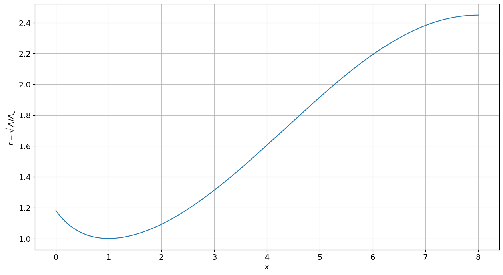

import numpy as np
import aerokit.common.defaultgas as defg
import aerokit.aero.Isentropic as Is
import aerokit.aero.ShockWave as sw
import aerokit.aero.MassFlow as mf
#
%matplotlib inline
import matplotlib.pyplot as plt
plt.rcParams['font.size'] = 14 ; plt.rcParams['lines.linewidth'] = 1.5
#
def new_plot(xlab, ylab):
plt.figure(figsize=(15,8))
plt.xlabel(xlab); plt.ylabel(ylab)
plt.grid(which='major', linestyle='-', alpha=0.8)
plt.grid(which='minor', linestyle=':', alpha=0.5)
Detailed flow regimes#
target_AoAc = 6.
length = 8.
#
# set an A/Ac law from a Mach evolution, ensure exit Mach number is consistent with As/Ac
Noz_x = np.linspace(0., length, 200, endpoint=True)
ma_max = mf.Mach_Sigma(target_AoAc, Mach=2.)
ma = 1. + (ma_max-1.)*np.sin(.5*(Noz_x-1.)*np.pi/(length-1.))
Noz_AoAc = mf.Sigma_Mach(ma)
#
new_plot('$x$', '$r=\sqrt{A/A_c}$') ; plt.plot(Noz_x, np.sqrt(Noz_AoAc))
#
coord_x = np.append(Noz_x, [length, 1.05*length]) # define x coordinate with 2 additional points

Isentropic subsonic flow#
Ma_col = .7
#
_M = mf.MachSub_Sigma(Noz_AoAc*mf.Sigma_Mach(Ma_col))
_M = np.append(_M, [_M[-1], _M[-1]]) # add constant points
_Pt = 0.*coord_x + 1.
_Ps = _Pt/Is.PiPs_Mach(_M)
#
new_plot('$x$','Mach')
plt.plot(coord_x, _M)
[<matplotlib.lines.Line2D at 0x7f099e998bd0>]
new_plot('$x$','$P_s$, $P_t$')
plt.plot(coord_x, _Pt, coord_x, _Ps)
plt.ylim(0, 1.05)
(0.0, 1.05)
Isentropic subsonic and choked flow#
_M = mf.MachSub_Sigma(Noz_AoAc)
_M = np.append(_M, [_M[-1], _M[-1]]) # add constant points
_Pt = 0.*coord_x + 1.
_Ps = _Pt/Is.PiPs_Mach(_M)
#
new_plot('$x$','Mach')
plt.plot(coord_x, _M)
[<matplotlib.lines.Line2D at 0x7f099ef59d10>]
new_plot('$x$','$P_s$, $P_t$')
plt.plot(coord_x, _Pt, coord_x, _Ps)
plt.ylim(0, 1.05)
(0.0, 1.05)
Isentropic supersonic flow#
_Minit = .05 + (Noz_x > 1.)*2. # set initial guess to .05 in convergent, 2. in diffuser
_M = mf.Mach_Sigma(Noz_AoAc, Mach=_Minit)
_M = np.append(_M, [_M[-1], _M[-1]]) # add constant points
_Pt = 0.*coord_x + 1.
_Ps = _Pt/Is.PiPs_Mach(_M)
#
new_plot('$x$','Mach')
plt.plot(coord_x, _M)
[<matplotlib.lines.Line2D at 0x7f099e8b28d0>]
new_plot('$x$','$P_s$, $P_t$')
plt.plot(coord_x, _Pt, coord_x, _Ps)
plt.ylim(0, 1.05)
(0.0, 1.05)
Supersonic nozzle with normal shock at exit#
# this is the same computation as previous cell but it is repeated to make it self consistent
_Minit = .05 + (Noz_x > 1.)*2. # set initial guess to .05 in convergent, 2. in diffuser
_M = mf.Mach_Sigma(Noz_AoAc, Mach=_Minit)
Msh = sw.downstream_Mn(_M[-1])
Ptloss = sw.Pi_ratio(_M[-1])
_M = np.append(_M, [Msh, Msh]) # add constant points
_Pt = np.append(0.*Noz_x + 1., [Ptloss, Ptloss]);
_Ps = _Pt/Is.PiPs_Mach(_M)
#
new_plot('$x$','Mach')
plt.plot(coord_x, _M)
[<matplotlib.lines.Line2D at 0x7f099e7bbe10>]
new_plot('$x$','$P_s$, $P_t$')
plt.plot(coord_x, _Pt, coord_x, _Ps)
plt.ylim(0, 1.05)
(0.0, 1.05)
Supersonic nozzle with normal shock in diffuser#
pos = .5 # 0 to 1 parameter to control shock position
NPR = NPR0*(1.-pos)+NPRsw*pos
#
# this is the same computation as previous cell but it is repeated to make it self consistent
_Minit = .05 + (Noz_x > 1.)*2. # set initial guess to .05 in convergent, 2. in diffuser
_M = mf.Mach_Sigma(Noz_AoAc, Mach=_Minit)
#
# analytical solution for Ms
K = NPR/target_AoAc/((defg._gamma+1.)/2)**((defg._gamma+1.)/2/(defg._gamma-1.))
Ms = np.sqrt((np.sqrt(1.+2.*(defg._gamma-1.)*K*K)-1.)/(defg._gamma-1))
#
# computation of shock wave (losses and upsptream Mach number)
Ptloss = Is.PiPs_Mach(Ms)/NPR
Msh = sw.Mn_Pi_ratio(Ptloss)
#
# redefine curves starting from 'ish' index (closest value of Msh in supersonic flow)
ish = np.abs(_M-Msh).argmin()
_M[ish:] = mf.MachSub_Sigma(Noz_AoAc[ish:]*mf.Sigma_Mach(Ms)/target_AoAc)
_M = np.append(_M, [Ms, Ms]) # add constant points
_Pt = np.append(0.*Noz_x + 1., [Ptloss, Ptloss]);
_Pt[ish:] = Ptloss
_Ps = _Pt/Is.PiPs_Mach(_M)
#
new_plot('$x$','Mach')
plt.plot(coord_x, _M)
---------------------------------------------------------------------------
NameError Traceback (most recent call last)
Cell In[11], line 2
1 pos = .5 # 0 to 1 parameter to control shock position
----> 2 NPR = NPR0*(1.-pos)+NPRsw*pos
3 #
4 # this is the same computation as previous cell but it is repeated to make it self consistent
5 _Minit = .05 + (Noz_x > 1.)*2. # set initial guess to .05 in convergent, 2. in diffuser
NameError: name 'NPR0' is not defined
new_plot('$x$','$P_s$, $P_t$')
plt.plot(coord_x, _Pt, coord_x, _Ps)
plt.ylim(0, 1.05)